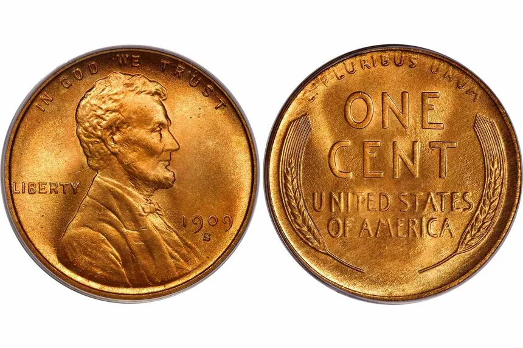

United States
The United States has been issuing coins since 1793 with the large cent. Since then
US coins have become the largest market for coin collectors in the world, with many of the
most expensive coins ever sold being from the US (1913 Libery Head Nickel, 1804 Dollar, etc.)
This page will cover some key dates for some American coins.
 Lincoln Wheat Penny
The Lincoln cent with wheat ears is perhaps the most famous coin series ever issued by the United
States, is not the world. While Abraham Lincoln is still on the obverse of the penny, the wheat ear
reverse was only used until 1958, after which is was replaced with the Lincoln Memorial and later in
2010, a shield. Below are some valuable dates for the wheat series.
| Date | Mint | Price in F | Notes |
|---|---|---|---|
| 1909 | S | $710 | With initials "VDB" |
| 1914 | D | $170 | N/A |
| 1909 | S | $79 | Without initials "VDB" |
| 1931 | S | $66 | N/A |
| 1911 | S | $36 | N/A |
| 1924 | D | $26 | N/A |
| 1922 | D | $22 | N/A |
| 1915 | S | $21 | N/A |
| 1912 | S | $18 | N/A |
| 1910 | S | $17 | N/A |
| 1914 | S | $15 | N/A |
| 1926 | S | $14 | N/A |
| 1913 | S | $12 | N/A |
| 1909 | P | $7.80 | With initials "VDB" |
| 1955 | P | $950.00 | Double Die |
Wheat Penny varieties
Sometimes, coins will have varieties, that is, there may be a distinguishing characteristic
between two coins of the same mint, year, and denomination that make it more or less valuable.
A famous example of this is the inclusion of the initials "VDB" on the bottom of the reverse of
the 1909 Wheat cent. At the time is was controversial as people believed it detracted from Lincoln's
so it was removed in the middle of 1909, creating a rare variety for the coins that did have the initials,
Below is a comparison of a reverse with and without the initials.